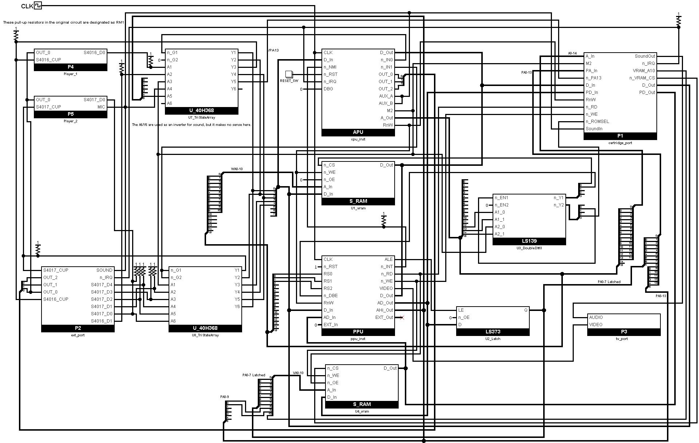
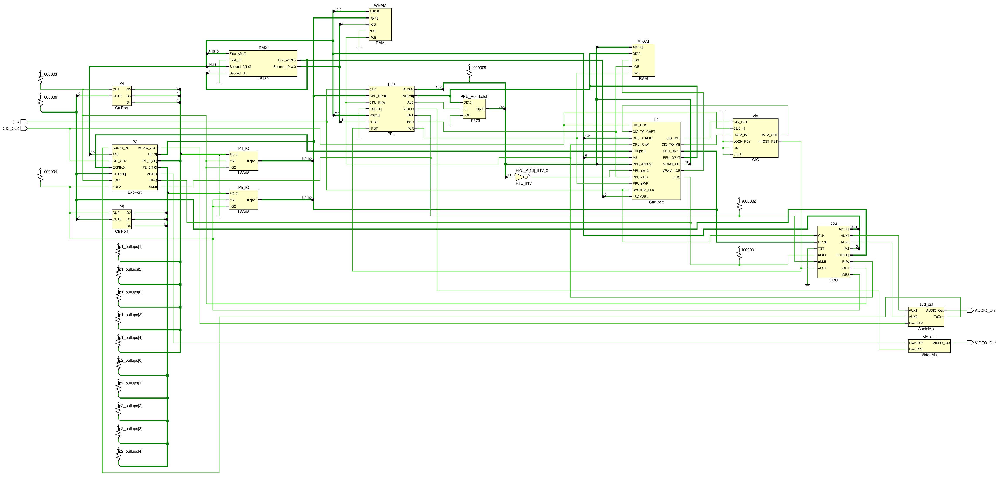
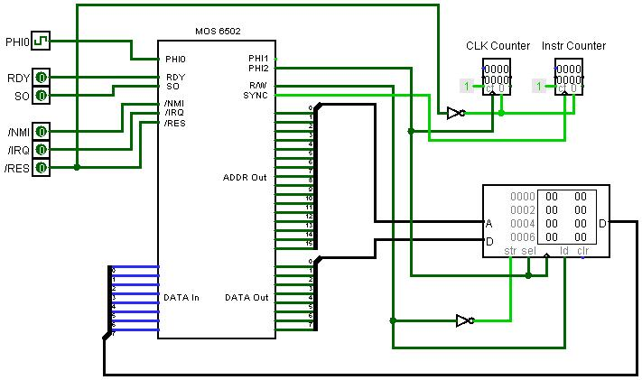
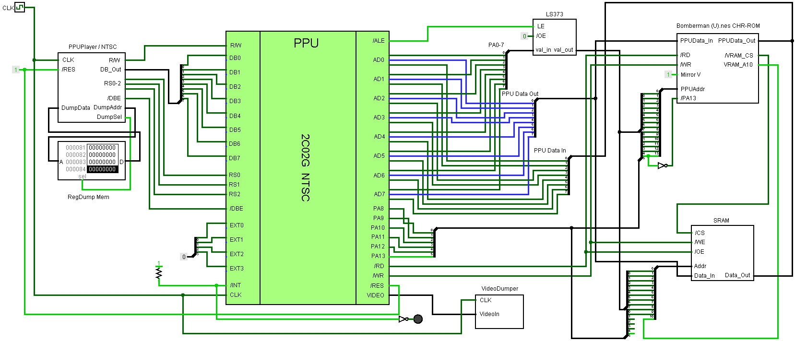
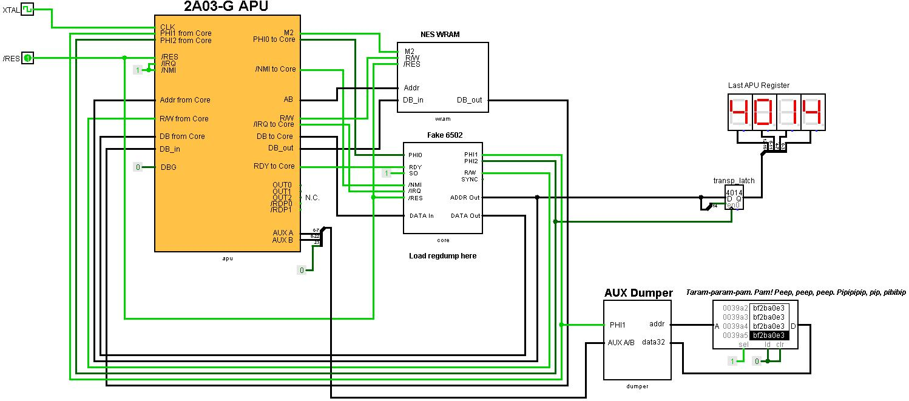
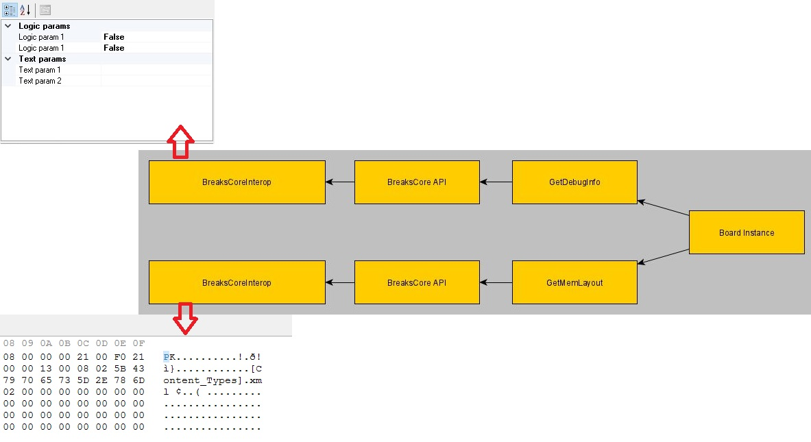

BreaksCore is the native part of the emulator, the gate-level NES/Famicom/Dendy emulator that both front-ends are built on. On top of the native core sit two applications: the managed WinForms application (Breaknes) and, for those who like minimalism, a Breaknes build using SDL2 (BreaknesSDL).
BreaksCore
The native part of the emulator.
Abstract Board
The abstract motherboard is used as a base class for all other NES/Famicom/Dendy variations.
The Board Factory is used to instantiate the motherboard:
- The parent application tells the factory what board to create (by name).
- This creates a class for the corresponding motherboard (
NESBoard.cpp,FamicomBoard.cpp).
So far it's a bit abstract, but later we will make the links between classes.
Boards
List of supported boards.
Famicom
The plan is to simulate the Generic Famicom board as follows:

NES
The plan is to simulate the Generic NES board as follows:

Dendy/Subor/Phantom/Whatever
TBD.
Bogus Board
BogusBoard is a default motherboard if BreaksCore did not recognize the board type when it created the instances or other erroneous parameters.

This system contains 64 KBytes of RAM, a 6502 processor core and nothing else.
In other words, it's a minimal computing system to check if anything is ticking in the emulator.
PPUPlayer Board
A special debug board for the PPUPlayer.

The board contains the PPU, adjacent logic (Address Latch, VRAM) and partial support for the cartridge connector (only the PPU/CHR pins are used).
APUPlayer Board
Another debug board for "playing" the APU register dump.

It is roughly the same as PPUPlayer, but simpler in that the APU does not require a cartridge connector and additional bindings associated with it.
The DPCM samples are loaded into the extended up to 64 Kbytes memory (WRAM).
Debug Hub
Breaknes debug infrastructure.
Warning: The current implementation is based on string associative lists and cannot be considered superfast.
Since Breaknes is a gate-level emulator, the main focus of debugging is monitoring various signals, buses and other internal states of the emulated system.
Debug entities are divided into the following categories:
DebugInfo: get/set internal stateMemLayout: read/write memory dumps

DebugInfo
From the GUI side, DebugInfo is displayed as PropertyGrid. The PropertyGrid is filled in dynamically, based on debugging information entries returned by the native Breaknes core.
Debug Information Types (DebugInfoType):
DebugInfoType_Core: Get the internal state of the M6502CoreDebugInfoType_CoreRegs: Get the state of the 6502 registersDebugInfoType_APU: Get the internal state of the APU componentsDebugInfoType_APURegs: Get the state of APU registersDebugInfoType_PPU: Get the internal state of the PPU componentsDebugInfoType_PPURegs: Get the state of the PPU registersDebugInfoType_Board: Get the internal state of the motherboard componentsDebugInfoType_Cart: Get the internal state of the cartridge and mapper components
Methods:
GetDebugInfoEntryCount: Get the number of debug entries of the specified typeGetDebugInfo: Get all entries of the specified type. Managed application must first know the number of records and allocate an array to retrieve them.GetDebugInfoByName: Get one DebugInfo record with the specified nameSetDebugInfoByName: Set one DebugInfo record with the specified name
MemLayout
The different pieces of memory within the emulated system are described by the MemDesrciptor structure.
Methods:
GetMemLayout: Get the number of memory descriptors that are registered in the DebugHubGetMemDescriptor: Get information about a memory blockDumpMem: Get the whole memory block. We are emulating NES here, so dump sizes will be small and it won't make sense to dump in parts.WriteMem: Set the entire memory block
The managed app (Breaknes)
NES/Famicom/Dendy emulator at the gate level.
Two TV Sets (issue #515)
The emulator supports up to 2 virtual TV Sets. The video signal of each PPU of the motherboard is bound to a TV Set; the binding is configured in the BoardDescription.json:
ppus— the PPU revisions of the board (array, up to 2). The legacy singleppufield is still supported.tvs— the TV binding:tvs[i]is the index of the PPU whose signal is displayed on the i-th TV. The default binding isTV[i]showsPPU[i]. For debugging, one PPU can be bound to both TVs at once ("tvs": [0, 0]).tv_layout— the physical arrangement of the TVs in the window:"horizontal"(side by side) or"vertical"(one above the other).
Select a debug board ("NES Debug: one PPU on two TVs (horizontal)" or "NES Debug: one PPU on two TVs (vertical)") in the settings to see the two-TV window in action.
Build
Use VS2022.
To make the generation of the native and managed parts in the same Build folder, you need to use this:
The SDL2 port (BreaknesSDL)
For those who like minimalism — Breaknes build using SDL2.
The implementation does not differ from Managed application: the same native part of BreaksCore is used. The motherboard and chip revisions are taken from the BoardDescription.json (next to the executable, shared with the managed application): the SDL build looks up the board by name, the config is required (there is no built-in fallback).
Selecting the board
By default the NES (NES-CPU-07, 1987) entry of the BoardDescription.json is used. Any other board from the same file can be selected on the command line:
breaknes --board "NES-101 (NESN-CPU-JIO-01, 1994-1995)" game.nes
Two TV Sets (issue #515)
The SDL build renders the video signal of every connected TV Set in one window. Up to 2 TVs are supported; the physical arrangement is controlled by the tv_layout property of the board in BoardDescription.json:
"tv_layout": "horizontal"— the TVs are placed side by side"tv_layout": "vertical"— the TVs are stacked one above the other
The binding of the PPUs to the TVs is described by the tvs array (tvs[i] = index of the PPU shown on the i-th TV). The default binding is TV[i] shows PPU[i]; for debugging, one PPU can be bound to both TVs at once ("tvs": [0, 0]).
IO subsystem
The IO subsystem is integrated into the SDL build (issue #516). SDL2 Input is used as the source of input events:
- Keyboard — SDL key names (
Up,Down,Left,Right,A,S,Z,X,Return,Space, ...) - Game controllers (if available) —
Controller<slot>_ButtonA,Controller<slot>_DPadUp,Controller<slot>_ButtonStart, ...; the analog sticks are mapped to digital eventsController<slot>_AxisLeftX-/_AxisLeftX+, etc.; the analog triggers toController<slot>_TriggerLeft/_TriggerRight.
The devices (Famicom/NES/Dendy controllers, virtual controllers), their bindings of IOState to input events and the Attach/Detach status to the motherboard ports are configured interactively:
breaknes --ioconfig [config_path]
The logic of the configurator is based on the IO settings dialog of the managed application (Breaknes/FormIOConfig.cs): the device pool (add/remove), the bindings (IOState <-> input event) and the Attach/Detach to ports.
The IO settings are stored separately from the managed application (IOConfigSDL.json by default, the managed application uses its own IOConfig.json), so the settings never overlap. At startup the emulator loads the settings from the same file and attaches the configured devices.
Note: virtual controllers have no on-screen dialogs in the SDL build; they are driven by the bound keyboard/game controller events like ordinary controllers.
Source: Breaknes/BreaksCore/Readme.md, Breaknes/Breaknes/Readme.md, Breaknes/BreaknesSDL/Readme.md · this page is part of the docs site.